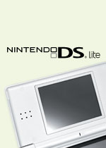
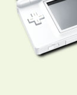
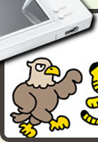
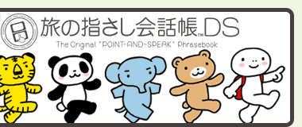

いま、アメリカンフットボールが人気を集めているのを知っていますか？ この４年間で高校や大学での競技人口が１割近くも増えているそうです。ヘルメットやプロテクターなどの大がかりな防具や専用のグラウンドが必要なスポーツという点を考えれば、かなりの知名度アップといえるかも。 そして、このアメフトブームを引っぱっているのが大人気コミック＆アニメの『アイシールド21』です。今回のN.O.MではニンテンドーDSとゲームボーイアドバンスに登場した『アイシールド21』をパワフルにレポート！
さらに『旅の指さし会話帳DS』も緊急特集。最初にひとこと言っておきますと、“指さし会話”ってスゴイです！ これまでも、従来のゲーム機では考えられなかった新しい利用スタイルを次々と提案してくれたニンテンドーDSですが、世界中の旅先でも活躍してくれるとは驚くばかり。
そして、おまたせしました。ニンテンドーDSの上位機種であるニンテンドーDS Liteの開発スタッフに聞いた本邦初公開のエピソードを紹介します。小さくなった本体サイズ、明るくなったディスプレイ……これらの改良はどのようにして成し遂げられたのか？ ニンテンドーDS Liteの“中身”に迫ります！
1-1. 『アイシールド21 MAX DEVILPOWER！』プレイレポート
1-2. 『アイシールド21 MAX DEVILPOWER！』ミニインタビュー
2-1. 『アイシールド21 DEVILBATS DEVILDAYS』プレイレポート
2-2. 『アイシールド21 DEVILBATS DEVILDAYS』ミニインタビュー
3. 特別インタビュー 書籍版編集部を直撃！ “指さし会話”の誕生秘話
4-1. ニンテンドーDS Liteとは？
4-2. ニンテンドーDS Lite開発スタッフインタビュー
『アイシールド21 MAX DEVILPOWER！』『アイシールド21 DEVILBATS DEVILDAYS』：
©
米スタジオ・ビレッジスタジオ／集英社・テレビ東京・NAS
©
2006 Nintendo
『旅の指さし会話帳DS』：
©
2006 Nintendo / Evidence Japan Co., Ltd. / Tose
©
2006 Joho Center Publishing Co., Ltd. 旅の指さし会話帳は情報センター出版局の商標です。
N.O.Mのバックナンバーページへ
N.O.M4月号のサイトマップへ